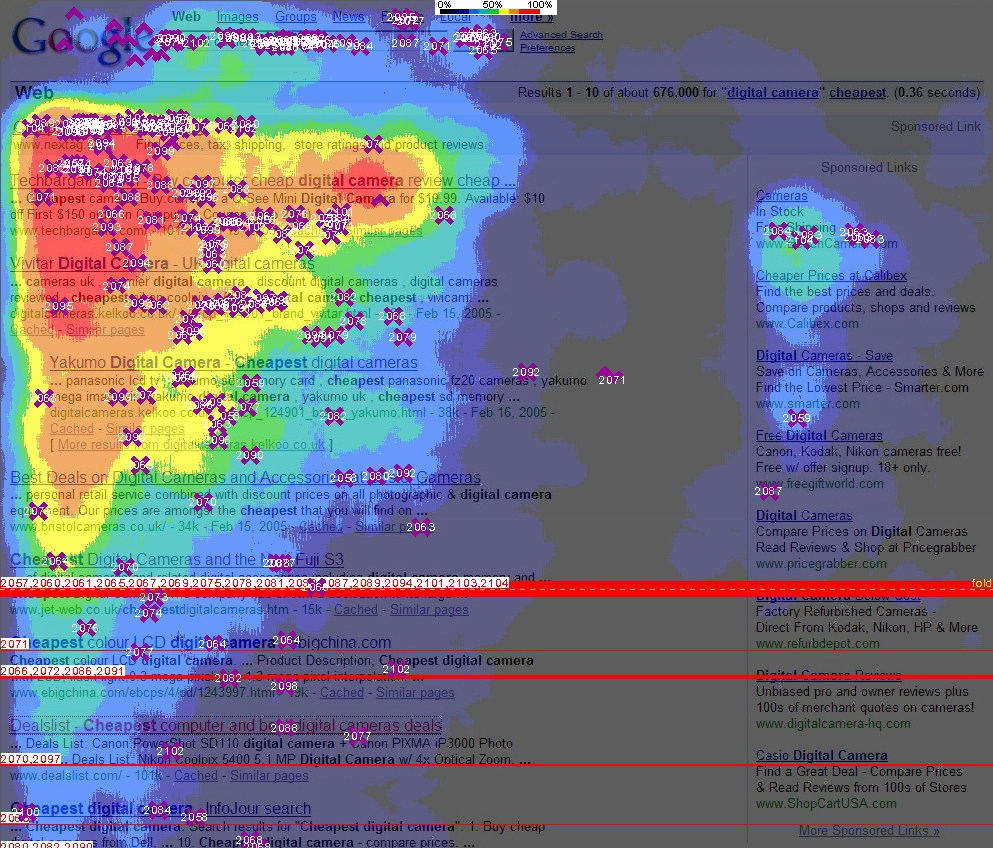
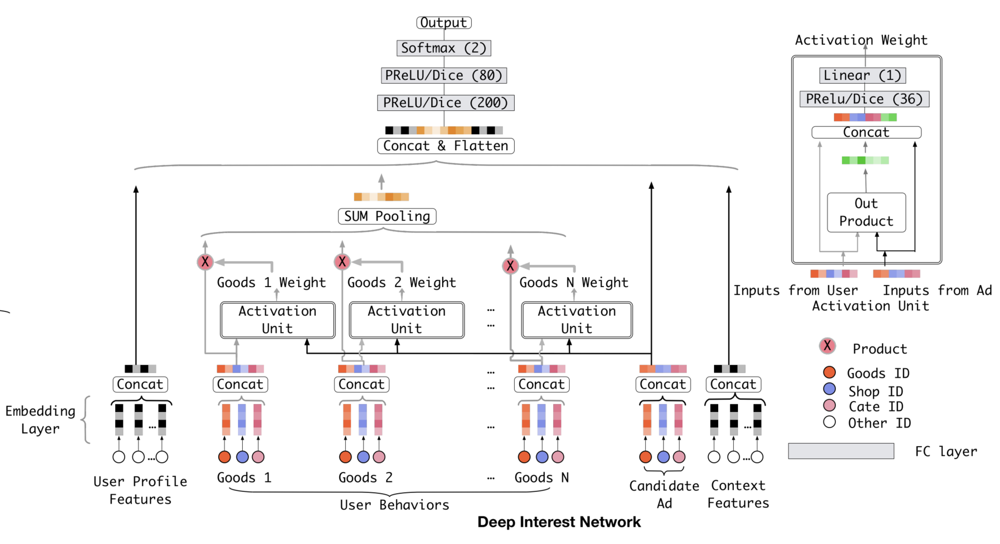

深度学习模型-进阶¶
DIN-注意力机制¶
“注意力机制”来源于人类天生的“选择性注意”的习惯，如浏览网页时，我们会选择性的注意页面的特定区域，而忽视其他区域：

对于推荐系统来说，“注意力机制”也很有用。
比如说一个用户访问某电商网站，我们决定是否要推“键盘”，用户的购买历史有“鼠标””T恤“”洗面奶“等，这时相比于关注”T恤“”洗面奶“的购买行为，我们应更加关注的是用户购买历史中的“鼠标”购买行为，因为“鼠标”和“键盘”的购买更“相关”。
因此阿里提出了DIN模型，它的base-model是一个典型的embedding + mlp结构。

base-model中，所有用户历史购买的商品Embedding会被取平均。
DIN则以候选商品和历史商品的相关性为权重，取所有用户历史购买的商品Embedding的加权平均：

跟embedding + mlp一样导入数据¶
import tensorflow as tf
# Training samples path, change to your local path
training_samples_file_path = tf.keras.utils.get_file("trainingSamples.csv",
"file:///Users/facer/IdeaProjects/SparrowRecSys/src/main"
"/resources/webroot/sampledata/trainingSamples.csv")
# Test samples path, change to your local path
test_samples_file_path = tf.keras.utils.get_file("testSamples.csv",
"file:///Users/facer/IdeaProjects/SparrowRecSys/src/main"
"/resources/webroot/sampledata/testSamples.csv")
# load sample as tf dataset
def get_dataset(file_path):
dataset = tf.data.experimental.make_csv_dataset(
file_path,
batch_size=12,
label_name='label',
na_value="0",
num_epochs=1,
ignore_errors=True)
return dataset
# split as test dataset and training dataset
train_dataset = get_dataset(training_samples_file_path)
test_dataset = get_dataset(test_samples_file_path)
特征处理¶
"""
movie id, user id embedding
电影id被即模型中candidate Ad
"""
# Config
EMBEDDING_SIZE = 10
# movie id embedding feature
movie_col = tf.feature_column.categorical_column_with_identity(key='movieId', num_buckets=1001)
movie_emb_col = tf.feature_column.embedding_column(movie_col, EMBEDDING_SIZE)
# user id embedding feature
user_col = tf.feature_column.categorical_column_with_identity(key='userId', num_buckets=30001)
user_emb_col = tf.feature_column.embedding_column(user_col, EMBEDDING_SIZE)
"""
类别型特征的embedding
仅对用户的第一类别、电影的第一类别做embedding
"""
# genre features vocabulary
genre_vocab = ['Film-Noir', 'Action', 'Adventure', 'Horror', 'Romance', 'War', 'Comedy', 'Western', 'Documentary',
'Sci-Fi', 'Drama', 'Thriller',
'Crime', 'Fantasy', 'Animation', 'IMAX', 'Mystery', 'Children', 'Musical']
# user genre embedding feature
user_genre_col = tf.feature_column.categorical_column_with_vocabulary_list(key="userGenre1",
vocabulary_list=genre_vocab)
user_genre_emb_col = tf.feature_column.embedding_column(user_genre_col, EMBEDDING_SIZE)
# item genre embedding feature
item_genre_col = tf.feature_column.categorical_column_with_vocabulary_list(key="movieGenre1",
vocabulary_list=genre_vocab)
item_genre_emb_col = tf.feature_column.embedding_column(item_genre_col, EMBEDDING_SIZE)
"""
用户特征：用户id embedding + 用户第一类别embedding + 用户数值型特征
上下文特征：电影第一类别embedding + 电影数值型特征
"""
# user profile
user_profile = [
user_emb_col,
user_genre_emb_col,
tf.feature_column.numeric_column('userRatingCount'),
tf.feature_column.numeric_column('userAvgRating'),
tf.feature_column.numeric_column('userRatingStddev'),
]
# context features
context_features = [
item_genre_emb_col,
tf.feature_column.numeric_column('releaseYear'),
tf.feature_column.numeric_column('movieRatingCount'),
tf.feature_column.numeric_column('movieAvgRating'),
tf.feature_column.numeric_column('movieRatingStddev'),
]
"""
用户行为历史，5个
"""
# Config
RECENT_MOVIES = 5 # userRatedMovie{1-5}
# user behaviors
recent_rate_col = [
tf.feature_column.numeric_column(key='userRatedMovie1', default_value=0),
tf.feature_column.numeric_column(key='userRatedMovie2', default_value=0),
tf.feature_column.numeric_column(key='userRatedMovie3', default_value=0),
tf.feature_column.numeric_column(key='userRatedMovie4', default_value=0),
tf.feature_column.numeric_column(key='userRatedMovie5', default_value=0),
]
"""
我们模型所需的原始输入数据
"""
# define input for keras model
inputs = {
'movieAvgRating': tf.keras.layers.Input(name='movieAvgRating', shape=(), dtype='float32'),
'movieRatingStddev': tf.keras.layers.Input(name='movieRatingStddev', shape=(), dtype='float32'),
'movieRatingCount': tf.keras.layers.Input(name='movieRatingCount', shape=(), dtype='int32'),
'userAvgRating': tf.keras.layers.Input(name='userAvgRating', shape=(), dtype='float32'),
'userRatingStddev': tf.keras.layers.Input(name='userRatingStddev', shape=(), dtype='float32'),
'userRatingCount': tf.keras.layers.Input(name='userRatingCount', shape=(), dtype='int32'),
'releaseYear': tf.keras.layers.Input(name='releaseYear', shape=(), dtype='int32'),
'movieId': tf.keras.layers.Input(name='movieId', shape=(), dtype='int32'),
'userId': tf.keras.layers.Input(name='userId', shape=(), dtype='int32'),
'userRatedMovie1': tf.keras.layers.Input(name='userRatedMovie1', shape=(), dtype='int32'),
'userRatedMovie2': tf.keras.layers.Input(name='userRatedMovie2', shape=(), dtype='int32'),
'userRatedMovie3': tf.keras.layers.Input(name='userRatedMovie3', shape=(), dtype='int32'),
'userRatedMovie4': tf.keras.layers.Input(name='userRatedMovie4', shape=(), dtype='int32'),
'userRatedMovie5': tf.keras.layers.Input(name='userRatedMovie5', shape=(), dtype='int32'),
'userGenre1': tf.keras.layers.Input(name='userGenre1', shape=(), dtype='string'),
'userGenre2': tf.keras.layers.Input(name='userGenre2', shape=(), dtype='string'),
'userGenre3': tf.keras.layers.Input(name='userGenre3', shape=(), dtype='string'),
'userGenre4': tf.keras.layers.Input(name='userGenre4', shape=(), dtype='string'),
'userGenre5': tf.keras.layers.Input(name='userGenre5', shape=(), dtype='string'),
'movieGenre1': tf.keras.layers.Input(name='movieGenre1', shape=(), dtype='string'),
'movieGenre2': tf.keras.layers.Input(name='movieGenre2', shape=(), dtype='string'),
'movieGenre3': tf.keras.layers.Input(name='movieGenre3', shape=(), dtype='string'),
}
定义模型¶
"""
将上述特征处理落到实处
候选物品特征、用户历史行为特征、用户画像特征、上下文特征
"""
candidate_emb_layer = tf.keras.layers.DenseFeatures([movie_emb_col])(inputs)
user_behaviors_layer = tf.keras.layers.DenseFeatures(recent_rate_col)(inputs)
user_profile_layer = tf.keras.layers.DenseFeatures(user_profile)(inputs)
context_features_layer = tf.keras.layers.DenseFeatures(context_features)(inputs)
"""
mask_zero:0当做padding
candidate_emb复制5次
相减，相乘，自身---concat起来，用户计算activation weight
"""
user_behaviors_emb_layer = tf.keras.layers.Embedding(input_dim=1001,
output_dim=EMBEDDING_SIZE,
mask_zero=True)(user_behaviors_layer) # mask zero
repeated_candidate_emb_layer = tf.keras.layers.RepeatVector(RECENT_MOVIES)(candidate_emb_layer)
activation_sub_layer = tf.keras.layers.Subtract()([user_behaviors_emb_layer,
repeated_candidate_emb_layer]) # element-wise sub
activation_product_layer = tf.keras.layers.Multiply()([user_behaviors_emb_layer,
repeated_candidate_emb_layer]) # element-wise product
activation_all = tf.keras.layers.concatenate([activation_sub_layer, user_behaviors_emb_layer,
repeated_candidate_emb_layer, activation_product_layer], axis=-1)
# 获得activation
activation_unit = tf.keras.layers.Dense(32)(activation_all)
activation_unit = tf.keras.layers.PReLU()(activation_unit) # 小于0的斜率为参数
activation_unit = tf.keras.layers.Dense(1, activation='sigmoid')(activation_unit)
# 将activation（先需reshape）与user_behaviors_emb相乘
activation_unit = tf.keras.layers.Flatten()(activation_unit)
activation_unit = tf.keras.layers.RepeatVector(EMBEDDING_SIZE)(activation_unit)
activation_unit = tf.keras.layers.Permute((2, 1))(activation_unit)
activation_unit = tf.keras.layers.Multiply()([user_behaviors_emb_layer, activation_unit])
# sum pooling
user_behaviors_pooled_layers = tf.keras.layers.Lambda(lambda x: tf.keras.backend.sum(x, axis=1))(activation_unit)
# fc layer
concat_layer = tf.keras.layers.concatenate([user_profile_layer, user_behaviors_pooled_layers,
candidate_emb_layer, context_features_layer])
output_layer = tf.keras.layers.Dense(128)(concat_layer)
output_layer = tf.keras.layers.PReLU()(output_layer)
output_layer = tf.keras.layers.Dense(64)(output_layer)
output_layer = tf.keras.layers.PReLU()(output_layer)
output_layer = tf.keras.layers.Dense(1, activation='sigmoid')(output_layer)
# 定义模型
model = tf.keras.Model(inputs, output_layer)
# compile the model, set loss function, optimizer and evaluation metrics
model.compile(
loss='binary_crossentropy',
optimizer='adam',
metrics=['accuracy', tf.keras.metrics.AUC(curve='ROC'), tf.keras.metrics.AUC(curve='PR')])
# train the model
model.fit(train_dataset, epochs=5)
# evaluate the model
test_loss, test_accuracy, test_roc_auc, test_pr_auc = model.evaluate(test_dataset)
print('\n\nTest Loss {}, Test Accuracy {}, Test ROC AUC {}, Test PR AUC {}'.format(test_loss, test_accuracy,
test_roc_auc, test_pr_auc))
Epoch 1/5
/Users/facer/opt/anaconda3/lib/python3.8/site-packages/tensorflow/python/keras/engine/functional.py:592: UserWarning: Input dict contained keys ['rating', 'timestamp', 'userAvgReleaseYear', 'userReleaseYearStddev'] which did not match any model input. They will be ignored by the model.
warnings.warn(
7403/7403 [==============================] - 18s 2ms/step - loss: 6.4626 - accuracy: 0.5617 - auc_2: 0.5690 - auc_3: 0.6155
Epoch 2/5
7403/7403 [==============================] - 17s 2ms/step - loss: 0.9878 - accuracy: 0.6312 - auc_2: 0.6636 - auc_3: 0.6976
Epoch 3/5
7403/7403 [==============================] - 15s 2ms/step - loss: 0.5799 - accuracy: 0.6994 - auc_2: 0.7563 - auc_3: 0.7763
Epoch 4/5
7403/7403 [==============================] - 15s 2ms/step - loss: 0.5315 - accuracy: 0.7348 - auc_2: 0.8043 - auc_3: 0.8247
Epoch 5/5
7403/7403 [==============================] - 15s 2ms/step - loss: 0.5014 - accuracy: 0.7558 - auc_2: 0.8295 - auc_3: 0.8525
1870/1870 [==============================] - 3s 1ms/step - loss: 0.6786 - accuracy: 0.6841 - auc_2: 0.7544 - auc_3: 0.7820
Test Loss 0.678617537021637, Test Accuracy 0.6841354966163635, Test ROC AUC 0.7543755769729614, Test PR AUC 0.7820263504981995
DIEN-兴趣进化序列¶
无论是电商购买行为，还是视频观看行为，它们都是随时间排序的序列。序列中存在着前后行为的依赖关系，它是很有价值的。
比如说上周用户在挑选一双篮球鞋，这位用户上周的行为序列会集中在篮球鞋的各品类商品中。在完成这一购买目标后，它的兴趣往往会迁移，比如说这周开始关注起机械键盘，这就是兴趣的进化。
为了捕捉兴趣进化，我们需要对用户的行为序列建模。阿里DIEN在DIN的基础上，使用了GRU和AUGRU（GRU with Attention update gate）来进行序列建模：

DIEN用”兴趣进化网络“也就是图中的彩色部分替换掉了原来的用户历史行为部分，虽然复杂，但还是只输出了一个\(h'(T)\)的embedding向量。
图中彩色部分共分3层：
第一层是embedding层（浅蓝部分），即将原始id信息转化为embedding行为序列。
第二层是兴趣抽取层（浅黄部分），它利用GRU组成的序列模型，来模拟用户每个节点的兴趣。

GRU的结构：
重置门:
候选状态:
更新门:
状态：
这里，作者设计了一个二分类模型来确保兴趣抽取的正确性，以用户下一时刻的真实行为\(e(t+1)\)为正例，负采样\(e(t+1)'\)（如随机采样），辅助兴趣\(h(t)\)的生成。
第三层是兴趣进化层（浅红部分），它的主要作用是利用AUGRU（GRU with Attention update gate）组成的序列模型，在兴趣抽取层基础上加入注意力机制，模拟与当前广告（Target Ad）相关的兴趣进化过程。
AUGRU在GRU原更新门的结构上加入了注意力得分，即:
加入注意力的更新门:
状态：
上面，注意力得分\(a_{t}\)的生成方式与DIN中基本一致。